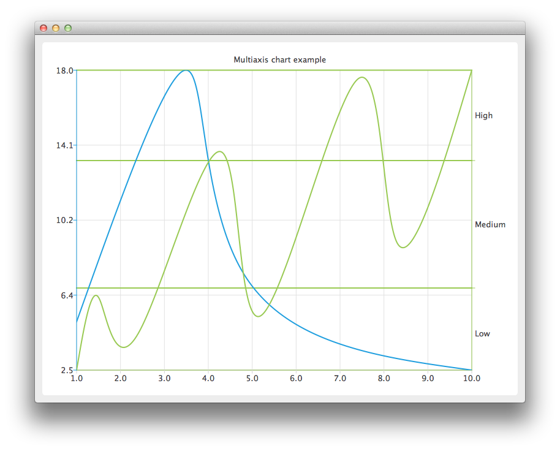

Using Multiple Axes
Note: This is part of the Charts with Widgets Gallery example.

Create the QChart instance, hide the legend of the chart, and set its title.
auto chart = new QChart; chart->legend()->hide(); chart->setTitle("Multiple Vertical Axes in Chart");
Create a QValueAxis instance that will be used as a horizontal axis by both series and add it the bottom of the chart. The axis can be shared between many series, but each series can have only one vertical and horizontal axis.
auto axisX = new QValueAxis; axisX->setTickCount(10); chart->addAxis(axisX, Qt::AlignBottom);
Create the first series, and add the data to it. Finally, add the series to the chart. Instantiate its own Y-axis, add it to the chart. Then attach both the common X-axis and the series specific Y-axis. In this example the color of the axis line is set to be the same as the color of the series to make it possible to distinguish which axis is attached to which series.
auto series = new QSplineSeries; *series << QPointF(1, 5) << QPointF(3.5, 18) << QPointF(4.8, 7.5) << QPointF(10, 2.5); chart->addSeries(series); auto axisY = new QValueAxis; axisY->setLinePenColor(series->pen().color()); chart->addAxis(axisY, Qt::AlignLeft); series->attachAxis(axisX); series->attachAxis(axisY);
Similarly prepare another series. This time a different axis type is used. Additionally grid lines color is also set to be the same as the color of the series.
series = new QSplineSeries; *series << QPointF(1, 0.5) << QPointF(1.5, 4.5) << QPointF(2.4, 2.5) << QPointF(4.3, 12.5) << QPointF(5.2, 3.5) << QPointF(7.4, 16.5) << QPointF(8.3, 7.5) << QPointF(10, 17); chart->addSeries(series); auto axisY3 = new QCategoryAxis; axisY3->append("Low", 5); axisY3->append("Medium", 12); axisY3->append("High", 17); axisY3->setLinePenColor(series->pen().color()); axisY3->setGridLinePen((series->pen())); chart->addAxis(axisY3, Qt::AlignRight); series->attachAxis(axisX); series->attachAxis(axisY3);
Create a QChartView object with QChart as a parameter.
createDefaultChartView(chart);